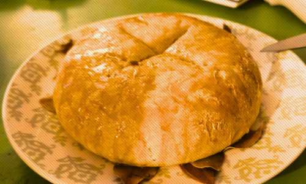

Hello! If you're here it's because you're like, "Recipes? Interesting.",
or something, and I respect that and thank you for the curiosity!
I am an omnivore with an adventurous palette but cursed with small
kitchens and limited supplies so the recipes I keep are eclectic and
relatively cheap and easy to make.
I hope that you find a recipe that makes you as excited to enjoy it as I was.
header banner
.jpg)
J00n3
Welcome to the blog, friends.
In this chapter we will learn about yummy food!
|
Current favorite recipes
|
Featured Favorite
Libum // Cheesecake with Honey
- 125g or 1 cup flour
- 125g or 1 cup ricotta cheese
- 1 egg
- Small handful of bay leaves
- 35g or 1/4 cup honey
- 1 hour at 350 f or 177 c
- Prepare a sheetpan by either lining it with parchment paper or by covering it in a thin layer or oil or butter.
- Place the bay leaves in a circular shape in the center of the pan
- Beat the egg
- Add ricotta and flour to egg and combine
- Shape the dough into a disc roughly the diameter of your bay leaf circle and score the top however you like
- Bake
I stumbled across this recipe during a lunch-time scrolling session on YouTube, and it became a quick favorite because of its history and the pleasant flavor and mouthfeel.
I have linked the source recipe and article through the title of this post, and I urge you to read more about this treat.
If you don’t want to do that, here’s the brief version. This subtly sweet and dense cake originates from ancient Rome, where it was a preferred offering to the gods and an often enjoyed treat for the public. The recipe was originally found in Cato’s “De Agri Cultura,” and it called for processing cheese with a mortar and pestle before use in this recipe where we have the luxury of using ricotta.
Tip:
To add more flavor, lightly sprinkle a mixture of sage, cinnamon, ginger, and cardamom over the top!
To add more flavor, lightly sprinkle a mixture of sage, cinnamon, ginger, and cardamom over the top!